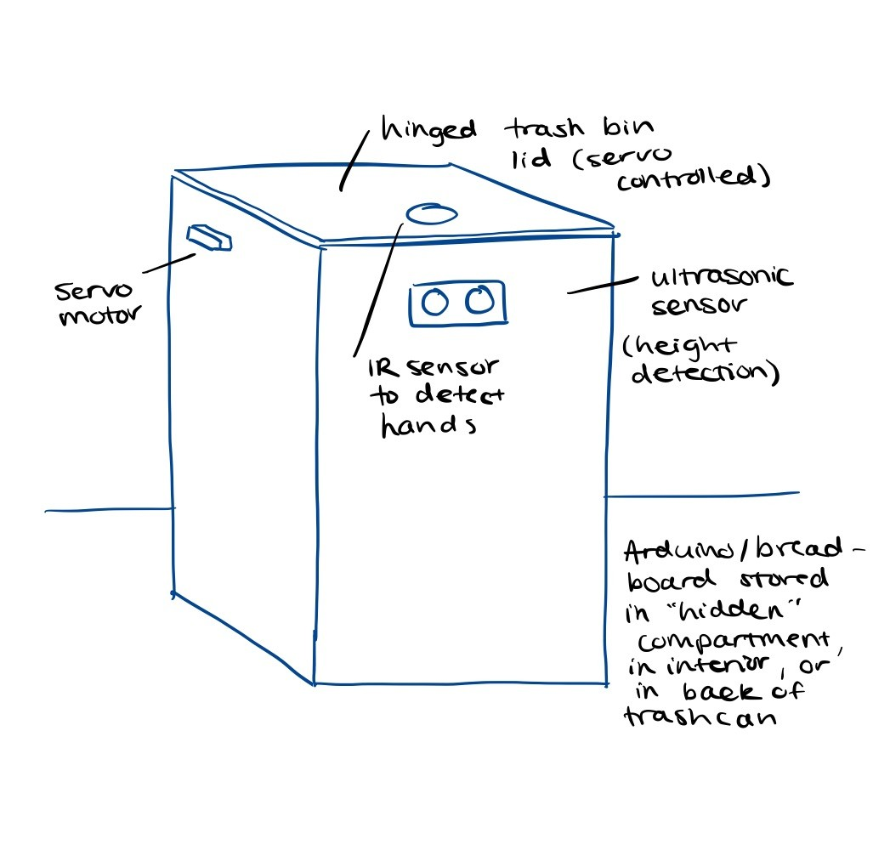

I want to build a smart trash can that only opens for humans and prevents pets (like my Japanese Akita) from accessing it. Regular trash cans can easily be broken into by pets like my large dog, leading to messes. This system will use motion, height detection, and hand proximity sensing to ensure that only a human can open it.
Week 1 - gather components and test individual sensors, write and test basic Arduino code to open lid when motion & height are detected, integrate IR sensor
Week 2 - Assemble components into functional prototype inside trash can, fine-tune sensor thresholds, final testing – potentially add green/red LEDs
If IR sensor fails, simplify to just height + motion